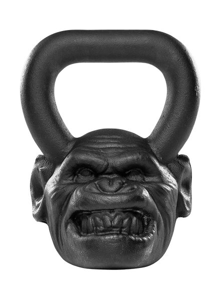

CrossFit Equipment
Exercise equipment is any apparatus or device used during physical activity
to enhance the strength or conditioning effects of that exercise by providing either fixed or adjustable amounts of resistance,
or to otherwise enhance the experience or outcome of an exercise routine.
Exercise equipment may also include such wearable items as proper footgear, gloves, and hydration packs.
Diffrent kind of category equipments:
- Weightlifting Bars and Plates
- Bodyweight and Gymnastics
- Conditioning
- Straps, Wraps and Racks
- Rogue Rigs and Support
- Strength Equipment
- Rogue Gear and Accessories
- Mobility
- Strongman
- Equipment for CrossFit
The Rogue Echo Bike combines heavy-duty steel, precision engineering,
and convenient customization to forge a stronger, sturdier fan bike.
 Rogue echo bike
Rogue echo bike
American-made, battle tested, and backed by a year-long warranty, the 56 LB Games Box is
designed for safe, effective plyometric training at any skill level. Add a box to a garage gym
for a new workout dynamic or order in bulk to equip or upgrade a large scale strength and conditioning facility.
 Rogue box jump
Rogue box jump
Each Rogue Ohio Bar is machined and assembled in Columbus, Ohio, and includes a lifetime guarantee against bending.
The bushing sleeves on the Ohio Bar promise a reliable spin, and their snap ring design maintains optimal stability throughout
any type of weightlifting regimen—from basic high school or collegiate strength training programs to intense Crossfit workouts.
 Rogue ohio bar
Rogue ohio bar
The kettlebell is a cast iron or cast steel ball with a handle attached to the top.
It is used to perform many types of exercises, including ballistic exercises that combine cardiovascular,
strength and flexibility training. They are also the primary equipment used in the weight lifting sport of kettlebell lifting.
 Rogue kettlebell ape
Athletes of any skill level and training background can benefit from the speed, smooth spin,
and durability of the E-Grip Jump Rope, increasing their double under counts and overall balance and explosiveness.
 Rogue E-Grip jumping rope
Rogue E-Grip jumping rope